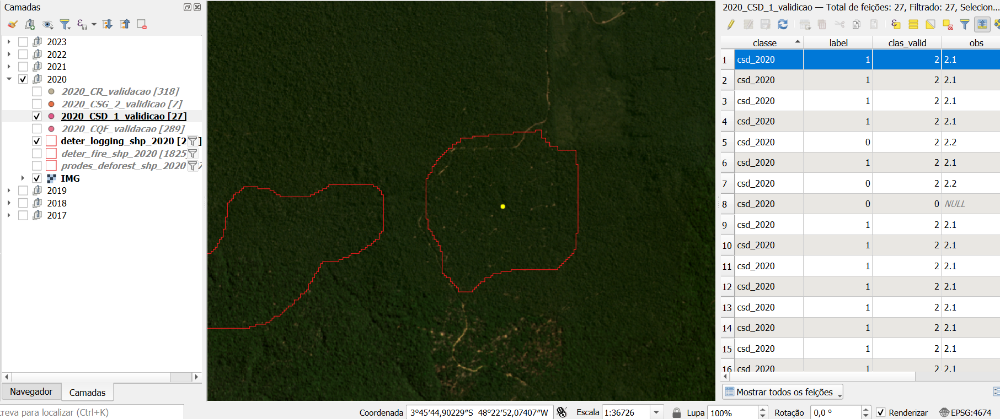
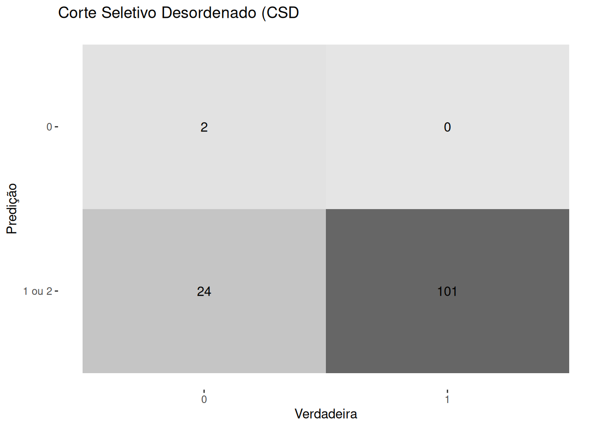
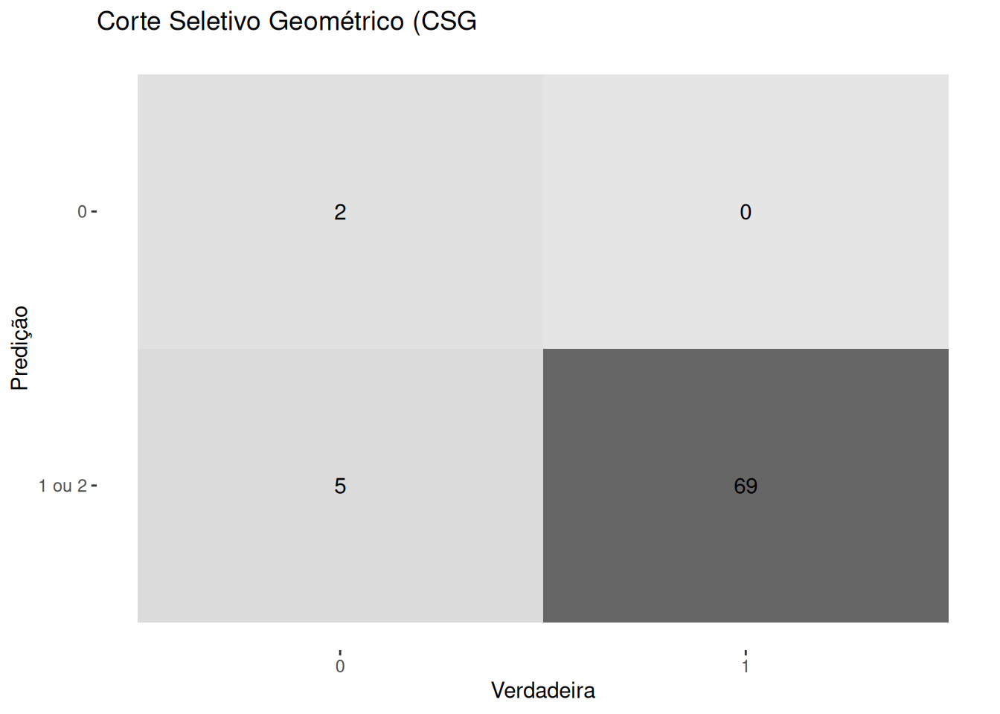
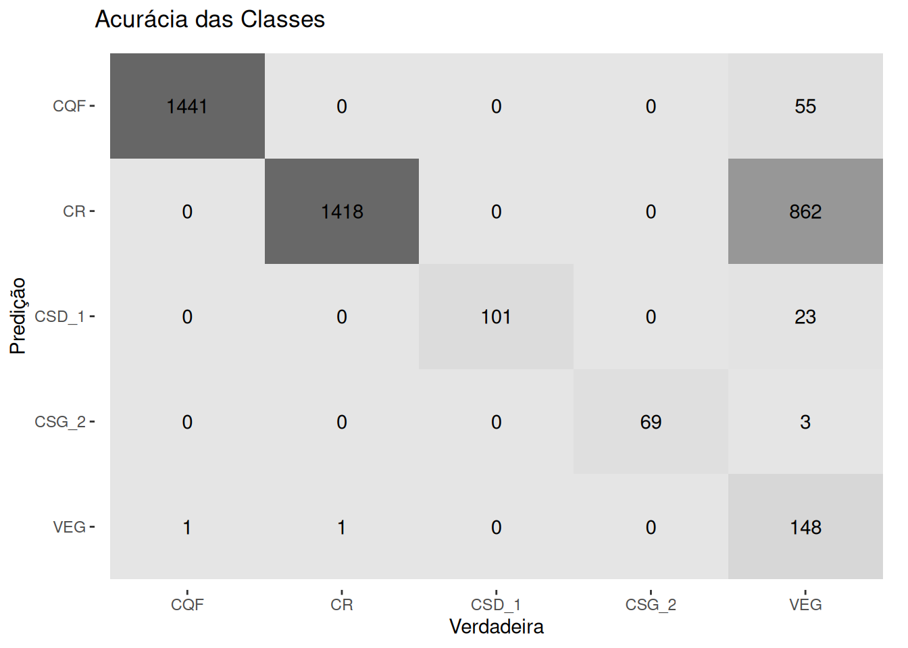

[1] "deter_fire_shp_2017.shp" "deter_fire_shp_2018.shp"
[3] "deter_fire_shp_2019.shp" "deter_fire_shp_2020.shp"
[5] "deter_fire_shp_2021.shp" "deter_fire_shp_2022.shp"
[7] "deter_fire_shp_2023.shp" "deter_logging_shp_2017.shp"
[9] "deter_logging_shp_2018.shp" "deter_logging_shp_2019.shp"
[11] "deter_logging_shp_2020.shp" "deter_logging_shp_2021.shp"
[13] "deter_logging_shp_2022.shp" "deter_logging_shp_2023.shp"
[15] "prodes_deforestation_shp_2017.shp" "prodes_deforestation_shp_2018.shp"
[17] "prodes_deforestation_shp_2019.shp" "prodes_deforestation_shp_2020.shp"
[19] "prodes_deforestation_shp_2021.shp" "prodes_deforestation_shp_2022.shp"
[21] "prodes_deforestation_shp_2023.shp"Análise dos Modelos de Detecção
1 Introdução
A análise da acurácia entre mapeamentos de diferentes fontes é a metodologia mais comum para estimar as taxas de acerto e erro em produtos cartográficos. Essa abordagem envolve a comparação de um elemento mapeado em uma classe com um resultado ideal. O número e a distribuição dos pixels usados para avaliar o produto gerado em relação aos dados de referência são determinados por técnicas estatísticas (Olofsson et al. 2014).
Neste relatório preliminar mostramos a quantidade necessária de pontos amostrais para realizar a análise de acurácia dos dados das atividade de desmatamento no período de 2017 a 2023 para o estado do Pará.
2 Matérias e Métodos
As métricas de acurácia seguiram o padrão ART/TREES, tendo como guia as recomendações de Adami et al. 2012 e de Olofsson et al. 2014.
Adotou-se o método de amostragem estratificada, sendo este consistente em calcular a proporção de cada estrato em relação ao total da população e obter uma quantidade de amostras por classe/estrato.
A amostragem foram realizadas com base nas classes dos vetores georreferenciados do Instituto Nacional de Pesquisas Espaciais (INPE), sendo eles o Desmatamento em Tempo Real do Desmatamento (DETER) e do Monitoramento do Desmatamento (PRODES) do estado do Pará, entre os anos de 2017 e 2023.
Os vetores georreferenciados utilizados foram:
Com base nestes arquivos as classes de distúrbios utilizadas foram:
| Arquivos INPE | Classe | Equivalente a |
|---|---|---|
| deter_fire… | fire | Floresta - Incêndios |
| deter_logging… | logging | Floresta - Corte seletivo |
| prodes_deforestation… | deforestation | Floresta - Corte raso desordenado |
Os vetores estavam com o DATUM WGS 84 e foram convertidos para o DATUM SIRGAS 2000 (ESPG 4674), para que fosse possível realizar o cálculo da área de cada classe de distúrbio.
Parte dos cálculos foram realizadas no ambiente de desenvolvimento R.
Para a conversão em lote dos vetores foram utilizados as seguintes funções do ambiente R:
# Lê os arquivos com final "shp" do diretório de dados
arquivos <- list.files(path = "data/", pattern = ".*shp$")
# Transforma o vetor com o nomes de arquivos em um vetor nomeado
names(arquivos) <- arquivos
# Lê os shapefile do diretório (data) e
# converte para WGS 84 / UTM 22N = EPSG:32622
shapes <-
arquivos |>
purrr::map(\(x) sf::st_transform(sf::st_read(paste0("data/", x)), crs = 4674)) |>
purrr::list_rbind(names_to = "classe") Após a conversão de DATUM, foi calculada a área em hectares e o número de polígonos de cada classe de distúrbio por ano, o resultado pode ser visto na tabela a seguir.
| Classe | Nº Polígonos | Área (ha) |
|---|---|---|
| deforestation_2017 | 31922 | 300985.04 |
| deforestation_2018 | 32556 | 301098.74 |
| deforestation_2019 | 34302 | 493185.62 |
| deforestation_2020 | 37372 | 514820.53 |
| deforestation_2021 | 41315 | 572468.60 |
| deforestation_2022 | 31120 | 502550.02 |
| deforestation_2023 | 30813 | 339786.92 |
| fire_2017 | 1664 | 441522.06 |
| fire_2018 | 3097 | 902263.49 |
| fire_2019 | 285 | 15165.97 |
| fire_2020 | 1825 | 215509.25 |
| fire_2021 | 2426 | 399476.50 |
| fire_2022 | 572 | 46510.31 |
| logging_2017 | 90 | 41525.83 |
| logging_2018 | 67 | 42840.49 |
| logging_2019 | 57 | 29519.66 |
| logging_2020 | 209 | 113373.66 |
| logging_2021 | 308 | 120761.50 |
| logging_2022 | 228 | 116841.18 |
| logging_2023 | 168 | 99966.30 |
A quantidade de pontos (n) por classe é definida pela fórmula (Adami 2012):
\[\begin{equation} n = \frac{(Z\alpha/2)^2 \times p \times q}{e^2} \end{equation}\]
Onde:
n = tamanho da amostra
\(Z(\alpha/2)\) = valor crítico que corresponde ao grau de confiança (99%)
p = proporção populacional de indivíduos que pertence à determinada categoria
q = proporção populacional de indivíduos que não pertence à determinada categoria (1 - p)
e = margem de erro (2,5%)
Ou como definido por Olosson:
\[\begin{equation} n = (\frac{\Sigma W_{i}S_{i}}{S(\tilde{O})})^2 \end{equation}\]
Onde, n = tamanho da amostra,
\(W_{i}\) área da classe i,
\(S_{i}\) é o desvio padrão do estrato i, \(S_{i} = \sqrt{U{{i}(1 - U_{i})}}\)
\(S(\tilde{O})\) é o erro padrão
Assim, o número de pontos amostrais para cada categoria de distúrbio ficou defina conforme a tabela a seguir
| Classe | Nº Polígonos | Área (ha) | p | q | Nº Pontos |
|---|---|---|---|---|---|
| deforestation | 239400 | 3024895.5 | 0.52 | 0.48 | 2646.53 |
| fire | 9869 | 2020447.6 | 0.35 | 0.65 | 2411.90 |
| logging | 1127 | 564828.6 | 0.10 | 0.90 | 935.23 |
3 Estatística Básica por classes
| class_valid | nº pol 2017 | % 2017 | nº pol 2018 | % 2018 | nº pol 2019 | % 2019 | nº pol 2020 | % 2020 | nº pol 2021 | % 2021 | nº pol 2022 | % 2022 | nº pol 2023 | % 2023 |
|---|---|---|---|---|---|---|---|---|---|---|---|---|---|---|
| 1-true | 237 | 0,683 | 330 | 0,631 | 44 | 0,71 | 194 | 0,61 | 270 | 0,74 | 104 | 0,684 | 239 | 0,601 |
| 1-false | 102 | 0,294 | 182 | 0,348 | 16 | 0,258 | 94 | 0,296 | 70 | 0,192 | 36 | 0,237 | 139 | 0,349 |
| 0-veg | 8 | 0,023 | 10 | 0,019 | 2 | 0,032 | 30 | 0,094 | 22 | 0,06 | 7 | 0,046 | 11 | 0,028 |
| 2-cs | 0 | 0 | 1 | 0,002 | 0 | 0 | 0 | 0 | 3 | 0,008 | 5 | 0,033 | 9 | 0,023 |
| 3-cqf | 0 | 0 | 0 | 0 | 0 | 0 | 0 | 0 | 0 | 0 | 0 | 0 | 0 | 0 |
| 4-outros | 0 | 0 | 0 | 0 | 0 | 0 | 0 | 0 | 0 | 0 | 0 | 0 | 0 | 0 |
| Total | 347 | 1 | 523 | 1 | 62 | 1 | 318 | 1 | 365 | 1 | 152 | 1 | 398 | 1 |
3.1 Corte Raso (CR)
| class_valid | 1-true | 1-false | 0-veg | 2-cs | 3-cqf | 4-outros | Total |
|---|---|---|---|---|---|---|---|
| nº pol 2017 | 237 | 102 | 8 | 0 | 0 | 0 | 347 |
| nº pol 2018 | 330 | 182 | 10 | 1 | 0 | 0 | 523 |
| nº pol 2019 | 44 | 16 | 2 | 0 | 0 | 0 | 62 |
| nº pol 2020 | 194 | 94 | 30 | 0 | 0 | 0 | 318 |
| nº pol 2021 | 270 | 70 | 22 | 3 | 0 | 0 | 365 |
| nº pol 2022 | 104 | 36 | 7 | 5 | 0 | 0 | 152 |
| nº pol 2023 | 239 | 139 | 11 | 9 | 0 | 0 | 398 |
| TOTAL | 1418 | 639 | 90 | 18 | 0 | 0 | 2165 |
| % TOTAL | 0,654 | 0,295 | 0,0415 | 0,008 | 0 | 0 | 1 |
3.2 Cicatriz de Queimada (CQF)
| class_valid | 3-true | 3-false | 0-veg | 2-cs | 1-cr | 4-outros | Total |
|---|---|---|---|---|---|---|---|
| nº pol 2017 | 241 | 31 | 33 | 12 | 14 | 1 | 332 |
| nº pol 2018 | 431 | 0 | 19 | 5 | 59 | 0 | 514 |
| nº pol 2019 | 33 | 0 | 4 | 0 | 15 | 0 | 52 |
| nº pol 2020 | 231 | 0 | 0 | 0 | 55 | 3 | 289 |
| nº pol 2021 | 292 | 0 | 2 | 0 | 31 | 2 | 327 |
| nº pol 2022 | 92 | 0 | 0 | 1 | 17 | 0 | 110 |
| nº pol 2023 | 121 | 0 | 0 | 0 | 9 | 0 | 130 |
| TOTAL | 1441 | 31 | 58 | 18 | 200 | 6 | 1754 |
| % TOTAL | 0,822 | 0,018 | 0,033 | 0,01 | 0,114 | 0,003 | 1 |
3.3 Corte Seletivo (CS)
3.3.1 CS Desordenado
| class_valid | 2-true | 2-false | 0-veg | 1-cr | 3-cqf | 4-outros | Total |
|---|---|---|---|---|---|---|---|
| nº pol 2017 | 6 | 3 | 1 | 0 | 0 | 0 | 10 |
| nº pol 2018 | 8 | 0 | 0 | 0 | 0 | 0 | 8 |
| nº pol 2019 | 4 | 0 | 0 | 1 | 0 | 0 | 5 |
| nº pol 2020 | 21 | 5 | 1 | 0 | 0 | 0 | 27 |
| nº pol 2021 | 270 | 70 | 22 | 3 | 0 | 0 | 365 |
| nº pol 2022 | 31 | 7 | 0 | 0 | 0 | 0 | 38 |
| nº pol 2023 | 20 | 5 | 0 | 0 | 0 | 0 | 25 |
| TOTAL | 360 | 90 | 24 | 4 | 0 | 0 | 478 |
| % TOTAL | 0,753 | 0,188 | 0,0502 | 0,008 | 0 | 0 | 1 |
3.3.2 CS Gemétrico
| class_valid | 2-true | 2-false | 0-veg | 1-cr | 3-cqf | 4-outros | Total |
|---|---|---|---|---|---|---|---|
| nº pol 2017 | 7 | 0 | 0 | 0 | 0 | 0 | 7 |
| nº pol 2018 | 4 | 0 | 0 | 0 | 0 | 0 | 4 |
| nº pol 2019 | 4 | 1 | 0 | 0 | 0 | 0 | 5 |
| nº pol 2020 | 6 | 1 | 0 | 0 | 0 | 0 | 7 |
| nº pol 2021 | 31 | 0 | 0 | 2 | 0 | 0 | 33 |
| nº pol 2022 | 9 | 0 | 2 | 0 | 0 | 0 | 11 |
| nº pol 2023 | 8 | 1 | 0 | 0 | 0 | 0 | 9 |
| TOTAL | 69 | 3 | 2 | 2 | 0 | 0 | 76 |
| % TOTAL | 0,908 | 0,039 | 0,026 | 0,026 | 0 | 0 | 1 |
3.4 Matriz de confusão
Os gráficos a seguir são matrizes de confusão gerada pela função caret::confusionMatrix() no ambiente R (r-project.org). A matriz de confusão é usada para avaliar o desempenho de um modelo de classificação, mostrando as contagens de predições corretas e incorretas em relação às classes reais (verdadeira).
O modelo foi analisado através de classificação visual por um analista especialista em geoprocessamento e fotointerpretação….
4 Procedimentos
| Classe | Valor |
|---|---|
| FLORESTA/VEG NATIVA (VEG) | 0 |
| CORTE RASO (CR) | 1 |
| CORTE SELETIVO-CS | 2 |
| CS DESORDENADO (CSD) | 2.1 |
| CS GEOMÉTRICO (CSG) | 2.2 |
| CICATRIZ DE QUEIMADA FLORESTA (CQF) | 3 |
| *OUTROS | 4 |
clas_valid ➞ este atributo representa a classe definida pelo analista conforme Tabela 6
label ➞ dado boleano, onde FALSE = 0, TRUE = 1. Ou seja, label = 0 CLASSE ORIGINAL DO POLÍGONO ERRADA (falso positivo), e label = 1 POLÍGONO VERDADEIRO.
Por exemplo as combinações:
label = 0 e clas_valid = ‘QUALQUER VALOR DIFERENTE DE ZERO (0)’, significa VALIDAÇÃO NEGATIVA, POLÍGONO ORIGINAL = FALSE;
label = 1 e clas_valid = ‘QUALQUER VALOR DIFERENTE DE ZERO (0)’, significa VALIDAÇÃO POSITIVA, POLÍGONO ORIGINAL= TRUE.
Foi considerado o ano PRODES a pedido do contratante como referencia de ano na avaliação da acurácia 01 de agosto do ano anterior até 31 julho do ano corrido ex desmatamento 2021 compreende os polígonos detectados entre 01/08/2020 até 31/07/2021;
Quando o polígono (centroide) selecionado para ser validado apresenta mistura de classes foi preenchido o valor do atributo clas_valid que corresponde a classe que possui a maior representatividade em área (>=50%)
Na validação da classe fogo de 2017 terá a combinação label = 0 & clas_valid = 3, onde a cicatriz de queimada é presente antes de 01/08/2016, portanto deve ser contabilizadas para o ano de 2016, ver Figura 5 e Figura 6.
Na validação de corte seletivo a combinação label = 0 & clas_valid = 2, demostra que há o corte seletivo mas ele errou a classe (desordenada ou geométrica), ver Figura 1 e Figura 2.
Na classe de corte seletivo foi sempre considerado true o polígono cuja a cicatriz permaneceu presente no ano da análise, ver Figura 1 e Figura 2.
Na classe de corte seletivo, é difícil separar as classes CSD de CSG (ver Figura 1 e Figura 2), pois foi possível identificar áreas (ex: ano de 2021) que mostram uma temporalidade na identificação desta classes, onde no mesmo ano, no mês T0 a classe era CSG, no T1, a classe mostrou-se como CSD (mostrando o provável período de retirada de madeira da área), e no T3 voltou a se CSG (só sendo visível os pátios secundários de exploração). Por isso a importância da data de detecção ser disponibilizada junto com o dado classificado.
Na análise do desflorestamento aproximadamente 30% dos polígonos falsos(label = 0 & clas_valid = 1), são desmatamentos verdadeiros só que já presentes no ano anterior, ver Figura 3 e Figura 4.


{kind=link}
{kind=link}



{kind=link}

{kind=link}
{kind=link}

{kind=link}
{kind=link}
{kind=link}
{kind=link}

{kind=link}
{kind=link}
{kind=link}
{kind=link}


{kind=link}


{kind=link}


{kind=link}

{kind=link}

{kind=link}

{kind=link}
{kind=link}
{kind=link}


| Termo | Probabilidade do Resultado |
|---|---|
| Praticamente certo | 99-100% de probabilidade |
| Muito provável | 90-100% de probabilidade |
| Provável | 66-100% de probabilidade |
| Aproximadamente tão provável quanto não | 33 a 66% de probabilidade |
| Improvável | 0-33% de probabilidade |
| Muito improvável | 0-10% de probabilidade |
| Excepcionalmente improvável | 0-1% de probabilidade |
5 Acurácia Por Classe
5.1 Desmatamento Com Corte Raso (CR)
5.1.1 Interpretação
- Verdadeiros Negativos (VN): 91 casos foram corretamente classificados como não-desmatamento.
- Falsos Positivos (FP): 655 casos foram incorretamente classificados como desmatamento.
- Falsos Negativos (FN): 1 casos foram incorretamente classificados como não-desmatamento.
- Verdadeiros Positivos (VP): 1418 casos foram corretamente classificados como desmatamento.
5.1.2 Métricas de Avaliação
Acurácia (Accuracy): 0.697
A acurácia é a proporção de previsões corretas sobre o total de previsões. Neste caso, o modelo tem uma acurácia de 69,7%. Isso significa que, em 69,7% das vezes, o modelo acertou as previsões.Intervalo de Confiança (95% CI): (0.6772, 0.7163)
O intervalo de confiança para a acurácia indica que, com 95% de confiança, a acurácia verdadeira do modelo está entre 67,72% e 71,63%.No Information Rate (NIR): 0.9575
O No Information Rate é a proporção do maior grupo de classe. Aqui, a classe “0” representa 95,75% dos dados. Esse valor representa a acurácia que seria obtida ao sempre prever a classe mais frequente.P-Value [Acc > NIR]: 1
O valor p associado ao teste da hipótese de que a acurácia do modelo é maior que o No Information Rate. Um valor p de 1 indica que não há evidência estatística de que o modelo é melhor do que uma classificação aleatória.Kappa: 0.1531
O Kappa é uma medida que compara a acurácia do modelo com a acurácia esperada por acaso. Um valor de 0,1531 indica um acordo apenas ligeiramente melhor do que o acaso.Teste de McNemar (P-Value): <0.002
O teste de McNemar avalia a simetria de erros do modelo (erros de tipo I vs. erros de tipo II). Um valor p muito pequeno (<2e-16) indica que há uma diferença significativa na taxa de erros de falsos positivos e falsos negativos.
5.1.3 Métricas de Sensibilidade e Especificidade
Sensibilidade (Sensitivity): 0.98913
A sensibilidade, ou taxa de verdadeiros positivos, é a proporção de casos positivos corretamente identificados pelo modelo. Com um valor de 98,91%, o modelo é altamente eficaz em identificar casos de desmatamento (classe 1).Especificidade (Specificity): 0.68403
A especificidade é a proporção de casos negativos corretamente identificados. Com 68,4%, o modelo é moderadamente eficaz em identificar casos sem desmatamento (classe 0).Valor Preditivo Positivo (Pos Pred Value): 0.12198
O valor preditivo positivo indica a proporção de verdadeiros positivos entre todos os casos que foram previstos como positivos. Aqui, apenas 12,2% das previsões de desmatamento são realmente corretas.Valor Preditivo Negativo (Neg Pred Value): 0.99930
O valor preditivo negativo é a proporção de verdadeiros negativos entre todos os casos que foram previstos como negativos. Com 99,93%, o modelo é altamente eficaz em prever corretamente a ausência de desmatamento.Prevalência: 0.04249
A prevalência é a proporção de casos reais positivos na amostra de dados. Apenas 4,25% dos casos são de desmatamento.Taxa de Detecção (Detection Rate): 0.04203
A taxa de detecção é a proporção de casos reais positivos detectados corretamente pelo modelo.Prevalência de Detecção (Detection Prevalence): 0.34457
A prevalência de detecção é a proporção de casos previstos como positivos pelo modelo.Acurácia Balanceada (Balanced Accuracy): 0.83658
A acurácia balanceada é a média da sensibilidade e da especificidade. Com 83,66%, o modelo mostra um desempenho equilibrado entre identificar corretamente casos positivos e negativos.
5.1.4 Conclusão
O modelo é altamente sensível (bom para detectar desmatamento), mas tem baixa especificidade e valor preditivo positivo, indicando que comete muitos falsos positivos (erros ao prever desmatamento quando não há). A acurácia é moderada e o Kappa sugere que o modelo tem um desempenho apenas ligeiramente melhor que o acaso. Devido ao valor P do teste de McNemar ser muito baixo, existe um viés significativo no tipo de erros cometidos pelo modelo. Em resumo, o modelo pode ser bom para detectar quase todos os casos de desmatamento, mas comete muitos erros ao prever desmatamento onde não existe.
Com este valor de acurácia (69,7%), considera-se que o modelo apresentou um resultado provável de ocorrer (Tabela 7).
5.2 Cicatriz de Queimada (CQF)

5.2.1 Interpretação
- Verdadeiro Negativo (TN): 53 casos foram corretamente classificados como não-cicatriz de queimada.
- Falso Positivo (FP): 259 casos foram incorretamente classificados como cicatriz de queimada
- Falso Negativo (FN): 1 casos foram incorretamente classificados como não-cicatriz de queimada.
- Verdadeiro Positivo (TP): 1441 casos foram corretamente classificados como cicatriz de queimada.
5.2.2 Métricas de Avaliação
Acurácia: 0.8518 (85.18%)
O modelo tem um desempenho geral bom, com 85.18% de previsões corretas.Kappa: 0.2503
Indica uma leve concordância entre as previsões do modelo e a classificação real, ajustada para a concordância que ocorre por acaso.Valor-p do Teste de McNemar: <0.0002
Mostra uma diferença estatisticamente significativa entre falsos positivos e falsos negativos.
5.2.3 Métricas de Sensibilidade e Especificidade
Sensibilidade: 0.98148 (98.15%)
O modelo é muito eficaz em detectar cicatrizes de queimadas quando elas realmente estão presentes.Especificidade: 0.84765 (84.77%)
Indica que o modelo é bom em identificar corretamente os casos negativos (sem cicatriz de queimada).Valor Preditivo Positivo (PPV): 0.16987 (16.99%)
A maioria das previsões positivas feitas pelo modelo são falsos positivos, o que indica baixa precisão nas previsões positivas.Valor Preditivo Negativo (NPV): 0.99931 (99.93%)
Altamente confiável quando o modelo prevê a ausência de cicatriz de queimada.Prevalência: 0.03079 (3.08%)
Indica que cicatrizes de queimadas são relativamente raras nos dados.Taxa de Detecção: 0.03022 (3.02%)
Proporção de casos positivos reais detectados corretamente pelo modelo.Prevalência de Detecção: 0.17788 (17.79%)
Proporção de casos previstos como positivos pelo modelo.Acurácia Balanceada: 0.91456 (91.46%)
Média entre Sensibilidade e Especificidade, útil para conjuntos de dados desbalanceados.
5.2.4 Conclusão
O modelo é altamente sensível e tem boa acurácia geral, mas a baixa especificidade e o baixo valor preditivo positivo indicam uma tendência a prever falsos positivos. Para melhorar, o modelo pode necessitar de ajustes para aumentar a precisão das previsões positivas, especialmente em um contexto onde falsos positivos podem ter implicações significativas.
Com este valor de acurácia (85,18%), considera-se que o modelo apresentou um resultado provável de ocorrer (Tabela 7).
5.3 Corte Seletivo Desordenado (CSD)

5.3.1 Interpretação
- Verdadeiros Negativos (VN): 2 casos foram corretamente classificados como não-corte seletivo.
- Falsos Positivos (FP): 24 casos foram incorretamente classificados como corte seletivo desordenado.
- Falsos Negativos (FN): 0 casos foram incorretamente classificados como não-corte seletivo desordenado.
- Verdadeiros Positivos (VP): 101 ccasos foram corretamente classificados como corte seletivo desordenado.
5.3.2 Métricas de avaliação
Acurácia: 0.811 (81.1%)
A acurácia indica a proporção de previsões corretas (tanto ‘0’ quanto ‘1’) sobre o total de previsões. Neste caso, 81.1% das previsões do modelo estão corretas.Intervalo de Confiança de 95% para a Acurácia: (0.732, 0.875)
Este intervalo sugere que há 95% de confiança de que a verdadeira acurácia do modelo está entre 73.2% e 87.5%.Taxa de Informação Nula (No Information Rate, NIR): 0.9843 (98.43%)
A NIR é a proporção de previsões corretas que seriam feitas se o modelo sempre previsse a classe mais comum. Neste caso, a classe ‘1’ (presença de CSD) é a mais comum.P-Valor [Acc > NIR]: 1
Este valor indica a probabilidade de o modelo ser melhor do que um modelo que sempre prevê a classe mais frequente. Um valor de 1 sugere que o modelo não é significativamente melhor que um modelo ingênuo que sempre prevê a classe majoritária.Kappa: 0.117
O Kappa mede a concordância entre as previsões do modelo e as classificações reais ajustadas para a concordância ao acaso. Um valor de 0.117 indica uma concordância muito baixa além do acaso.Teste de McNemar P-Valor: 0.000002668
O teste de McNemar é usado para avaliar a significância das diferenças entre as duas classificações (predição ‘0’ vs ‘1’). Um p-valor muito baixo indica uma diferença significativa entre as classificações ‘0’ e ‘1’.
5.3.3 Métricas de Sensibilidade e Especificidade
Sensibilidade (Recall para a classe ‘0’): 1.00000 (100%)
A sensibilidade indica a capacidade do modelo de prever corretamente a classe ‘0’. Neste caso, o modelo detecta corretamente todos os casos de ‘0’ (ausência de CSD).Especificidade (Recall para a classe ‘1’): 0.80800 (80.8%) A especificidade indica a capacidade do modelo de prever corretamente a classe ‘1’. Neste caso, 80.8% dos casos de ‘1’ (presença de CSD) são corretamente identificados.
Valor Preditivo Positivo (PPV ou Precisão para a classe ‘0’): 0.07692 (7.692%)
O PPV indica a proporção de previsões ‘0’ que são corretamente ‘0’. Aqui, apenas 7.692% das previsões de ‘0’ são verdadeiras.Valor Preditivo Negativo (NPV para a classe ‘1’): 1.00000 (100%) O NPV indica a proporção de previsões ‘1’ que são corretamente ‘1’. Neste caso, todas as previsões de ‘1’ estão corretas.
Prevalência: 0.01575 (1.575%) A prevalência é a proporção de casos reais da classe ‘0’. Neste conjunto de dados, 1.575% das amostras são da classe ‘0’.
Taxa de Detecção (Detection Rate para a classe ‘0’): 0.01575 (1.575%) A taxa de detecção é a proporção de casos positivos que são corretamente identificados. Coincide com a prevalência aqui.
Prevalência de Detecção (Detection Prevalence para a classe ‘0’): 0.20472 (20.472%) A prevalência de detecção é a proporção de todas as previsões que são para a classe ‘0’. Neste caso, 20.472% das previsões do modelo foram para a classe ‘0’.
Acurácia Balanceada: 0.90400 (90.4%) A acurácia balanceada é a média da sensibilidade e especificidade. Reflete a habilidade do modelo em identificar ambas as classes de forma justa. Neste caso, é alta, indicando bom desempenho geral.
5.3.4 Conclusão
O modelo apresenta alta acurácia geral (81.1%), mas isso pode ser enganoso devido à distribuição altamente desequilibrada das classes (classe ‘1’ dominante). A alta sensibilidade e valor preditivo negativo sugerem que o modelo é bom em detectar a classe ‘1’ (presença de CSD), mas tem dificuldade significativa em prever corretamente a classe ‘0’ (ausência de CSD), como indicado pela baixa especificidade e valor preditivo positivo. O valor de Kappa baixo também indica que o modelo não tem um desempenho muito melhor do que o acaso quando ajustado para a distribuição de classe.
Com este valor de acurácia (81,1%), considera-se que o modelo apresentou um resultado provável de ocorrer (Tabela 7).
5.4 Corte Seletivo Geométrico (CSG)

5.4.1 Interpretação
Verdadeiro Negativo (VN): 2 casos foram corretamente classificados como não-corte seletivo geométrico.
Falso Positivo (FP): 5 casos foram incorretamente classificados como corte seletivo geométrico.
Falso Negativo (FN): 0 casos foram incorretamente classificados como não-corte seletivo geométrico.
Verdadeiro Positivo (VP): 69 casos foram corretamente classificados como corte seletivo geométrico.
5.4.2 Métricas de Avaliação
Accuracy (Acurácia): 0.9342 (93.42%) A acurácia indica a proporção de todas as previsões corretas (VN + VP) em relação ao total de amostras. Neste caso, o modelo classificou corretamente 93.42% dos exemplos.
95% CI (Intervalo de Confiança de 95% para a Acurácia): (0.8531, 0.9783) O intervalo de confiança indica a faixa dentro da qual a verdadeira acurácia do modelo está, com 95% de confiança. Isso sugere que a acurácia real do modelo está entre 85.31% e 97.83%.
No Information Rate (NIR): 0.9737 (97.37%) O NIR representa a acurácia que seria alcançada se o modelo previsse sempre a classe mais comum (classe 1, corte seletivo, que aparece em 97.37% dos casos).
P-Value [Acc > NIR]: 0.98486 Este p-valor testa a hipótese de que a acurácia do modelo é melhor do que o NIR. Um valor de p maior que 0.05 sugere que não há evidência estatística de que o modelo seja melhor do que uma classificação ingênua que sempre prevê a classe mais comum.
Kappa: 0.4207 O coeficiente Kappa mede o grau de concordância entre as previsões do modelo e as classificações reais, ajustado para a concordância que ocorreria por acaso. Um valor de 0.4207 indica uma concordância moderada, mas não excelente.
Mcnemar’s Test P-Value: 0.07364 O teste de McNemar é utilizado para avaliar se as taxas de erro entre duas classificações são significativamente diferentes. Um p-valor maior que 0.05 indica que não há diferença estatisticamente significativa entre as taxas de erro dos dois grupos.
5.4.3 Métricas de Sensibilidade e Especificidade
Sensitivity (Sensibilidade): 1.00000 (100%) Sensibilidade é a capacidade do modelo de identificar corretamente os casos positivos (corte seletivo). Uma sensibilidade de 100% indica que o modelo identificou todos os casos de corte seletivo corretamente.
Specificity (Especificidade): 0.93243 (93.24%) Especificidade é a capacidade do modelo de identificar corretamente os casos negativos (não-corte seletivo). O valor de 93.24% indica que o modelo foi capaz de identificar corretamente a maioria dos casos de não-corte seletivo.
Pos Pred Value (Valor Preditivo Positivo): 0.28571 (28.57%) O valor preditivo positivo representa a proporção de previsões positivas corretas entre todas as previsões positivas. Um valor de 28.57% indica que, entre todas as vezes que o modelo previu um corte seletivo, apenas 28.57% das previsões estavam corretas.
Neg Pred Value (Valor Preditivo Negativo): 1.00000 (100%) O valor preditivo negativo representa a proporção de previsões negativas corretas entre todas as previsões negativas. Um valor de 100% indica que todas as previsões de não-corte seletivo estavam corretas.
Prevalence (Prevalência): 0.02632 (2.63%) A prevalência indica a proporção de casos positivos reais na população total. Apenas 2.63% dos casos são de corte seletivo.
Detection Rate (Taxa de Detecção): 0.02632 (2.63%) A taxa de detecção indica a proporção de casos positivos detectados corretamente pelo modelo.
Detection Prevalence (Prevalência de Detecção): 0.09211 (9.21%) A prevalência de detecção indica a proporção de todas as previsões feitas como positivas pelo modelo.
Balanced Accuracy (Acurácia Balanceada): 0.96622 (96.62%) A acurácia balanceada é a média da sensibilidade e especificidade. Um valor de 96.62% indica que o modelo tem um bom equilíbrio entre a capacidade de detectar casos positivos e negativos.
5.4.4 Conclusão
O modelo mostra uma alta acurácia e sensibilidade, sugerindo que é muito bom em identificar casos de corte seletivo. No entanto, o baixo valor preditivo positivo (28.57%) indica uma alta taxa de falsos positivos, sugerindo que o modelo frequentemente classifica erroneamente os casos como corte seletivo quando não são. O Kappa de 0.4207 sugere uma concordância moderada além do acaso. A especificidade é alta, mas o teste de McNemar e o p-valor para a acurácia em relação ao NIR sugerem que o modelo não é significativamente melhor do que uma classificação baseada na classe majoritária.
**Com esta acurácia (93,42%), considera-se que o modelo apresentou um resultado muito provável de ocorrer (@tbl-prob-result).**6 Acurácia Global

A matriz de confusão mostra como as previsões do modelo se comparam com os valores reais (referência) para cada classe:
- CQF: 1441 instâncias foram corretamente classificadas como CQF, enquanto 55 instâncias de VEG foram erroneamente classificadas como CQF.
- CR: 1418 instâncias foram corretamente classificadas como CR, enquanto 862 instâncias de VEG foram erroneamente classificadas como CR.
- CSD_1: 101 instâncias foram corretamente classificadas como CSD_1.
- CSG_2: 69 instâncias foram corretamente classificadas como CSG_2.
- VEG: 148 instâncias foram corretamente classificadas como VEG, mas muitas instâncias (55 para CQF e 862 para CR) foram erroneamente classificadas como outras classes.
6.1 Métricas de Avaliação
- Accuracy (Acurácia): 0.7707 Isso significa que aproximadamente 77% das previsões do modelo estão corretas.
- 95% CI (Intervalo de Confiança de 95%): (0.7576, 0.7835) Indica que a verdadeira acurácia do modelo está entre 75,76% e 78,35% com 95% de confiança.
- No Information Rate (Taxa de Não Informação): 0.5531 Representa a proporção da maior classe no conjunto de dados. Se o modelo previsse sempre a classe mais frequente, teria uma acurácia de 55,31%.
- P-Value [Acc > NIR]: < 2.2e-16 Indica que a acurácia do modelo é significativamente maior do que a taxa de não informação, sugerindo que o modelo tem valor preditivo.
- Kappa: 0.6588. Essa métrica considera a acurácia e o acaso. Um valor de 0,6588 indica uma concordância substancial além do acaso.
- Mcnemar’s Test P-Value: NA. Este teste não é aplicável porque o modelo pode não ter condições para o teste, como falta de dados para realizar a comparação de erros tipo I e tipo II.
6.2 Métricas de Sensibilidade e Especificidade
Para cada classe, temos várias métricas importantes:
- Sensitivity (Sensibilidade): Capacidade do modelo de identificar corretamente instâncias positivas de uma classe específica.
- CQF: 0.9632. O modelo identificou corretamente 96,32% das instâncias CQF.
- CR: 0.6219. O modelo identificou corretamente 62,19% das instâncias CR, o que é relativamente baixo.
- CSD_1: 0.8145. O modelo identificou corretamente 81,45% das instâncias CSD_1.
- CSG_2: 0.9583. O modelo identificou corretamente 95,83% das instâncias CSG_2.
- VEG: 0.9867. O modelo identificou corretamente 98,67% das instâncias VEG.
- Specificity (Especificidade): Capacidade do modelo de identificar corretamente instâncias negativas de uma classe específica.
- Muito alta para todas as classes exceto VEG, onde é de 0.76259.
- Pos Pred Value (Valor Preditivo Positivo): Proporção de verdadeiros positivos entre todos os positivos previstos.
- CQF: 0.9993. Quase todas as instâncias previstas como CQF são realmente CQF.
- VEG: 0.1357. Apenas 13,57% das instâncias previstas como VEG são realmente VEG, indicando que muitas previsões de VEG estão incorretas.
- Neg Pred Value (Valor Preditivo Negativo): Proporção de verdadeiros negativos entre todos os negativos previstos.
- Geralmente alta, indicando que as instâncias que não são de uma determinada classe são bem identificadas como não pertencentes a essa classe.
- Prevalence (Prevalência): Proporção de instâncias reais de cada classe no conjunto de dados.
- CR tem a maior prevalência (55,31%).
- Balanced Accuracy (Acurácia Balanceada): Média da sensibilidade e especificidade para uma classe, útil para dados desbalanceados.
- Alta para todas as classes, exceto CR, onde é moderada (0.8107).
6.3 Conclusão
O modelo apresenta boa acurácia geral (77,07%) e valores altos de sensibilidade e especificidade para a maioria das classes, exceto CR, que tem uma sensibilidade mais baixa (62,19%). A classe VEG tem um valor preditivo positivo muito baixo (13,57%), indicando que o modelo muitas vezes prevê incorretamente outras classes como VEG. A acurácia balanceada é alta para todas as classes, sugerindo que o modelo tem bom desempenho geral, apesar de algumas áreas para melhoria, especialmente na previsão correta da classe VEG e CR.
Com este valor de acurácia (77,07%), considera-se que o modelo apresentou um resultado provável de ocorrer (Tabela 7).
7 Observações
Recomenda se o uso com cautela deste dados estatístico.
As imagens usadas para a determinação das classes de validação possuem pixel nominal 5x5 metros mosaicos de imagens planet e a classificação original foi gerada com imagens com pixel >= 30X30 metros
Para cálculos de biomassa área deve se redesenhar regionalmente os polígonos da classificação original para ter maior precisão nas estimativas
É muito importante ter as datas da detecção das classes originais dos polígonos principalmente para CSD, CSG E CQF, Pois estes processos são dinâmicos e num mesmo ano a classe pode passar de ‘VEG’, PARA ‘CSD’ E DEPOIS ‘CR’, E isso foi verificado neste processo de validação
8 Referências
Adami, M.; Mello, M. P.; Aguiar, D. A.; Rudorff, B. F. T.; Souza, A. F. de. A Web platform development to perform thematic accuracy assessment of sugarcane mapping in South-Central Brazil. Remote Sensing, v. 4, n.10, p. 3201-3214, 2012.
Olofsson, P., Foody, G. M., Herold, M., Stehman, S. V., Woodcock, C. E., & Wulder, M. A. (2014). Good practices for estimating area and assessing accuracy of land change. Remote Sensing of Environment, 148, 42–57.